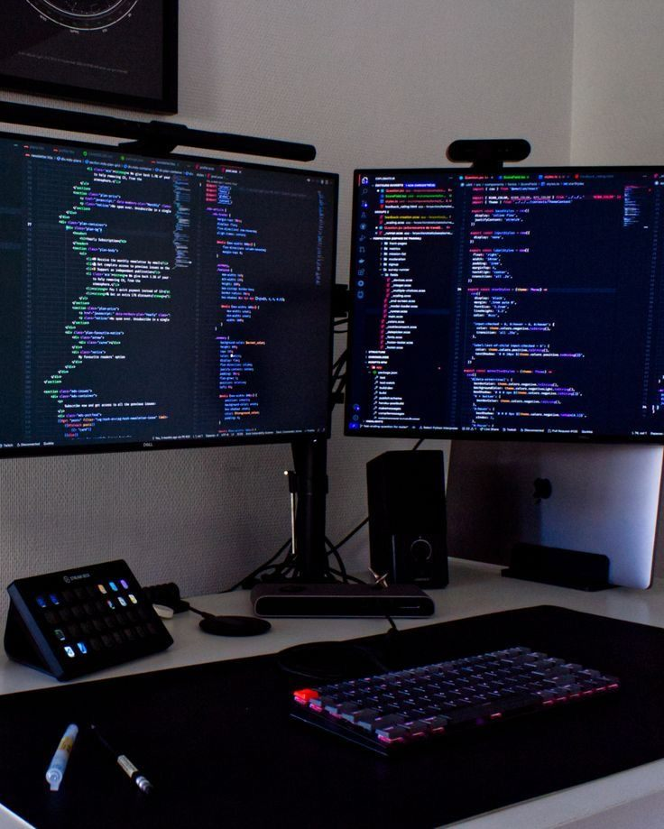

Frontend
HTML, CSS, JavaScript
See it in actionOne person · Built with AI assistance · Ask me anything about how it works
Including the staff side, the cash handling and the reporting most builders skip. English and Russian. Every project live and public, code handed over on delivery.
“I build websites” describes a tool, and several million people can say it. In-Room Dining is not really a hotel app. It is a transaction surviving contact with real staff: a customer orders, a deadline is real, money arrives as card or cash, a person has to record the cash, three roles need three levels of access, and someone files VAT at month end.
Take the hotel out and the same shape is a clinic, a salon, a driving school, a repair shop, a caterer. Different vocabulary, identical problem. That pattern is what I have built, so that is what I sell.
I am one person, and I build with AI assistance. You hear that from me before you ask, because I will answer anything you want to know about how the code works.
Everything below is in code you can open:

HTML, CSS, JavaScript
See it in actionNode.js, Express
See it in actionSQLite
See it in actionGit, Docker, VS Code, Claude AI
See it in actionThe booking and ordering machinery a business runs on — the customer side, the staff side, the money and the month-end report. English and Russian, built into the product.
The reference project
A hotel room-service system. Guests are verified against five fields of their reservation before a menu appears. Menus lock at real kitchen deadlines. VAT sits separate from net. Card payment, or cash held open until Reception records it — because cash does not exist until a person touches it.
The page a customer finds before any of that — what you do, when you are open, where you are, and a way to reach you that actually works.
A site for a small dental practice: services, a real weekly opening table, a map, and an appointment form with working validation, pending, success and failure states. Bilingual, including the validation messages.
A pixel-inspired recreation of a premium brochure PDF, rebuilt as a warm editorial landing page with hand-drawn SVG illustrations, organic torn-edge photo frames, and serif typography.
Tell me what happens now — not what you want built, but what your day looks like and where it leaks.
Send an email